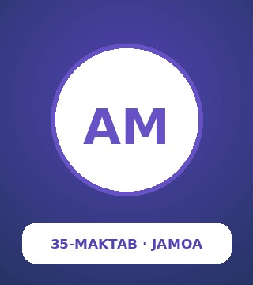

Rahbariyat va mas’ul xodimlar
35-maktab rahbariyati, tarbiyaviy va harbiy-vatanparvarlik yo‘nalishlari bo‘yicha mas’ul xodimlar bilan tanishing.
 Maktab direktori
Maktab direktori
Botir Rahimov
Maktab faoliyatini umumiy boshqarish, o‘quv-tarbiya jarayoni sifati va ota-onalar bilan ishlashga mas’ul.

OBIDOAziza Mahmudova
O‘quvchilarning ma’naviy-axloqiy tarbiyasi, madaniy-ma’rifiy tadbirlar va jamoatchilik ishlarini muvofiqlashtiradi.
 CHQBT rahbari
CHQBT rahbari
Jasur Tursunov
Chaqiruvga qadar boshlang‘ich tayyorgarlik (CHQBT), jismoniy chiniqtirish va vatanparvarlik mashg‘ulotlarini olib boradi.
- Qabul kunlari: Dushanba – Shanba (08:00 – 13:00)
- Manzil: Qashqadaryo viloyati, Qarshi tumani, Batosh mahallasi (RP9V+9R)
- Bog‘lanish: +998 91 956 90 84 · fazliddinrahmonov614@gmail.com
Qo‘shimcha fan o‘qituvchilari va sinf rahbarlari ro‘yxati maktab ma’muriyati tomonidan bosqichma-bosqich kiritiladi.